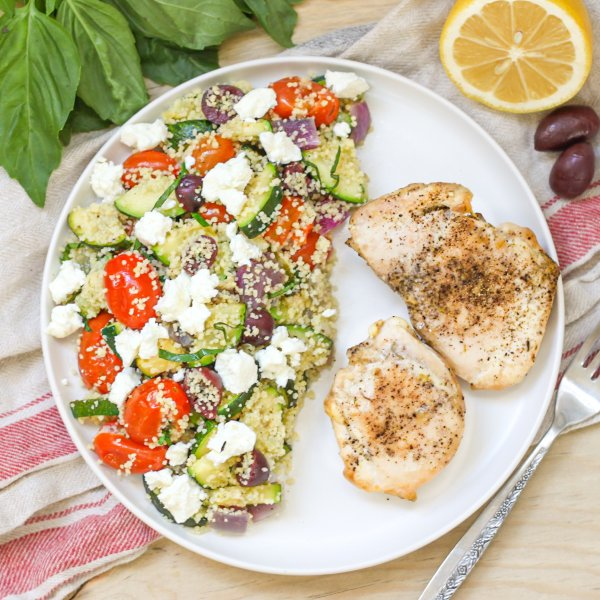

Roast Chicken Thighs with Tomato-Zucchini Couscous & Goat Cheese

Total Time
35 min
Nutrition (Per Serving)
687.5 kcalCalories
62.3 gProtein
53.2 gCarbs
26.8 gFat
Full nutrition table
| Calories | 687.5 kcal |
| Total fat | 26.8 g |
| Saturated fat | 7.8 g |
| Trans fat | 0.3 g |
| Cholesterol | 226.2 mg |
| Sodium | 675.5 mg |
| Carbohydrates | 53.2 g |
| Fiber | 10.1 g |
| Sugars | 10.3 g |
| Protein | 62.3 g |
| Potassium | 1758.2 mg |
| Calcium | 143.2 mg |
| Iron | 5.3 mg |
| Vitamin A | 1628.9 IU |
| Vitamin C | 63.5 mg |
| Vitamin D | 6.5 IU |
Cookware
Ingredients
- 16 fl ozchicken or vegetable broth
- 2 lbchicken thighs, boneless skinless
- 1 small pkgfresh basil
- 4 clovesgarlic
- 1 (4 oz) loggoat cheese
- 2 pintsgrape tomatoes
- ½ cupKalamata olives, pitted
- 1lemon
- 1 mediumred onion
- 1 cupwhole wheat couscous
- 4 mediumzucchini squash
- black pepper
- extra virgin olive oil
- oregano, dried
- rosemary, dried
- salt
- thyme, dried
Steps
- Preheat oven to 450°F.
- In a large pot, bring broth to a boil. Once boiling, remove from heat, add couscous and salt, and stir to combine. Cover and let stand for 10 minutes.16 fl oz (2 cups) chicken or vegetable broth
1 cup whole wheat couscous
¼ tsp salt - Meanwhile, wash and dry the fresh produce.4 medium zucchini squash
2 pints grape tomatoes
1 small pkg fresh basil
1 lemon - Peel, halve, and large dice onion; transfer to a large baking sheet pan.1 medium red onion
- Trim and quarter zucchini lengthwise, then slice crosswise into ¼-inch thick pieces; add to the baking sheet with the onion, along with the tomatoes.
- Peel and mince garlic; sprinkle over the veggies, then drizzle with oil and season with spices. Toss to combine and spread out in an even layer.4 cloves garlic
4 tsp extra virgin olive oil
1 tsp salt
1 tsp oregano, dried
½ tsp rosemary, dried
½ tsp thyme, dried - Pat chicken dry with paper towels and place on a plate; season with salt and pepper on both sides. Add chicken to the baking sheet and nestle into the veggies.2 lb chicken thighs, boneless skinless
½ tsp salt
½ tsp black pepper - Place baking sheet in the oven and roast until veggies are tender and chicken is cooked through, 18-20 minutes. Remove from oven.
- Meanwhile, roughly chop olives; pick basil leaves off the stems, roll up crosswise, and thinly slice into ribbons. Add both to the pot with the couscous.½ cup Kalamata olives, pitted
- Juice lemon into the pot and stir to combine. Cover to keep warm.
- Just before serving, transfer roasted veggies to the pot with the couscous and stir to combine.
- To serve, divide veggie couscous and chicken thighs between plates; crumble goat cheese over couscous. Enjoy!1 (4 oz) log goat cheese